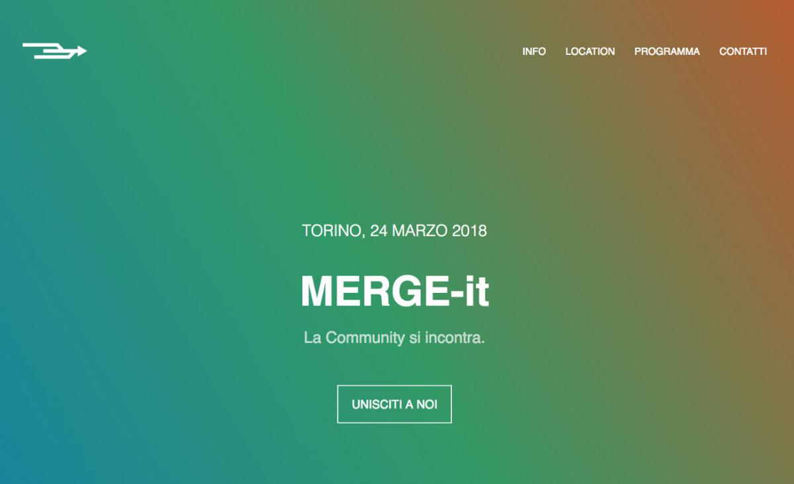

Anche noi di SOD siamo stati a MERGE-it 2018 tra le comunità del mondo Open*
Cosa abbiamo fatto
| Ora | Sessione | Chi | Slide mostrate |
|---|---|---|---|
|
10:00 - 10:30 |
Spaghetti Open Data (SOD): uno sguardo a chi siamo |
||
|
10:30 - 11:30 |
Cosa significa curarsi della comunità? Partiamo da SOD (intro breve + workshop) |
||
|
11:30 - 12:30 |
Il nostro diritto digitale alla città |
Federico Piovesan, Chiara Ciociola |
|
|
14:30 - 15:00 |
Open Data e i bot: un connubio perfetto! |
||
|
15:00 - 15:30 |
L’OpenGeoData School – Mappe esperienziali per l’innovazione territoriale e il turismo |
||
|
15:30 - 16:00 |
Open Data + Open Source= ricerca libera, riproducibile e trasparente |
||
|
16:15 - 16:45 |
I sistemi di carsharing dovrebbero essere consultabili in "opendata"! |
||
|
16:45 - 17:30 |
Superset: dai dati alla visualizzazione |
||
|
17:30 - 18:00 |
Albi Pretori e RSS: verso un Hacking della PA |
Di cosa si trattava: da dove nasce la nostra partecipazione
"In Italia esistono tante realtà che si occupano di cultura e libertà digitali, sotto molti aspetti ed in molti modi. Scopo di MERGE-it è riunirle insieme, per conoscersi e farsi conoscere, discutere e dibattere, confrontarsi e misurarsi."
Questo è quello che si legge nella pagina dell'evento. Nel corso del 2017 abbiamo parlato diverse volte del desiderio di non essere isolati, ma di integrarsi maggiormente con le comunità italiane legate all'openness. Nel resoconto di Open Data Fest avevamo scritto:
"A quanto pare l’esigenza di connettere comunità che lavorano e sono appassionate di temi affini, non è solo una sensazione di pochi: parliamo di tutte quelle comunità che in qualche forma supportano e discutono di libertà digitali (Openness in senso lato, Open Source, Free Software, Open Content e beni comuni digitali).Assieme a Roberto Guido (presidente di Italian Linux Society - ILS), che ci ha cercato qualche settimana prima del raduno, abbiamo iniziato a ragionare su un evento unico, che riunisca molte comunità nello stesso luogo e negli stessi giorni, mantenendo ognuna separata nella gestione dei propri eventi. Per iniziare può bastare essere tutti nello stesso luogo, simultaneamente: è un inizio."
Ecco come nasce MERGE-it 2018: non eravamo i soli ad avere questa sensazione e nel corso dell'estate 2017 dall'idea siamo passati alla pratica.
Per leggere più agevolmente le discussioni in lista SOD che ne parlano, le abbiamo taggate con "mergeit":